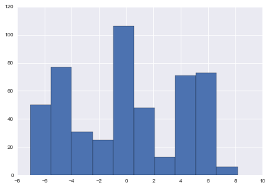

!date
import numpy as np, pandas as pd, matplotlib.pyplot as plt, seaborn as sns
%matplotlib inline
sns.set_context('paper')
sns.set_style('darkgrid')
Mon Aug 17 14:54:44 CEST 2015
Mixture Model in PyMC3¶
Original NB by Abe Flaxman, modified by Thomas Wiecki
import pymc3 as pm, theano.tensor as tt
/home/wiecki/miniconda3/lib/python3.4/site-packages/IPython/html.py:14: ShimWarning: The `IPython.html` package has been deprecated. You should import from `notebook` instead. `IPython.html.widgets` has moved to `ipywidgets`.
"`IPython.html.widgets` has moved to `ipywidgets`.", ShimWarning)
/home/wiecki/miniconda3/lib/python3.4/site-packages/IPython/utils/traitlets.py:5: UserWarning: IPython.utils.traitlets has moved to a top-level traitlets package.
warn("IPython.utils.traitlets has moved to a top-level traitlets package.")
# simulate data from a known mixture distribution
np.random.seed(12345) # set random seed for reproducibility
k = 3
ndata = 500
spread = 5
centers = np.array([-spread, 0, spread])
# simulate data from mixture distribution
v = np.random.randint(0, k, ndata)
data = centers[v] + np.random.randn(ndata)
plt.hist(data);

# setup model
model = pm.Model()
with model:
# cluster sizes
a = pm.constant(np.array([1., 1., 1.]))
p = pm.Dirichlet('p', a=a, shape=k)
# ensure all clusters have some points
p_min_potential = pm.Potential('p_min_potential', tt.switch(tt.min(p) < .1, -np.inf, 0))
# cluster centers
means = pm.Normal('means', mu=[0, 0, 0], sd=15, shape=k)
# break symmetry
order_means_potential = pm.Potential('order_means_potential',
tt.switch(means[1]-means[0] < 0, -np.inf, 0)
+ tt.switch(means[2]-means[1] < 0, -np.inf, 0))
# measurement error
sd = pm.Uniform('sd', lower=0, upper=20)
# latent cluster of each observation
category = pm.Categorical('category',
p=p,
shape=ndata)
# likelihood for each observed value
points = pm.Normal('obs',
mu=means[category],
sd=sd,
observed=data)
# fit model
with model:
step1 = pm.Metropolis(vars=[p, sd, means])
step2 = pm.ElemwiseCategoricalStep(vars=[category], values=[0, 1, 2])
tr = pm.sample(10000, step=[step1, step2])
[-----------------100%-----------------] 10000 of 10000 complete in 93.9 sec

After convergence¶
# take a look at traceplot for some model parameters
# (with some burn-in and thinning)
pm.plots.traceplot(tr[5000::5], ['p', 'sd', 'means']);

# I prefer autocorrelation plots for serious confirmation of MCMC convergence
pm.autocorrplot(tr[5000::5], varnames=['sd'])
(<matplotlib.figure.Figure at 0x7fa3cc21ae80>,
array([[<matplotlib.axes._subplots.AxesSubplot object at 0x7fa3cc27a908>]], dtype=object))

Sampling of cluster for individual data point¶
i=0
plt.plot(tr['category'][5000::5, i], drawstyle='steps-mid')
plt.axis(ymin=-.1, ymax=2.1)
(0.0, 1000.0, -0.1, 2.1)

def cluster_posterior(i=0):
print('true cluster:', v[i])
print(' data value:', np.round(data[i],2))
plt.hist(tr['category'][5000::5,i], bins=[-.5,.5,1.5,2.5,], rwidth=.9)
plt.axis(xmin=-.5, xmax=2.5)
plt.xticks([0,1,2])
cluster_posterior(i)
true cluster: 2
data value: 3.29